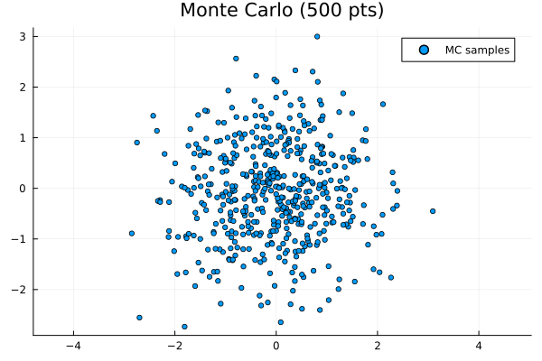
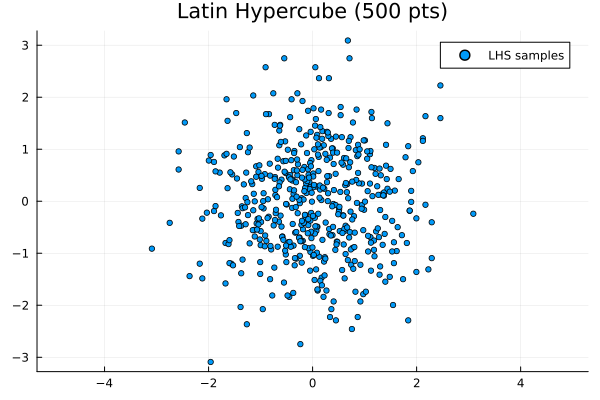
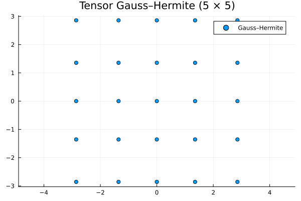
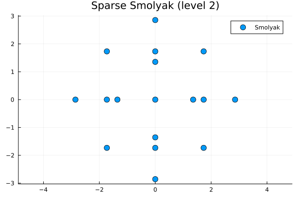

Quadrature Methods
A crucial part of transport-map applications is selecting a suitable quadrature method. Quadrature is used in map optimization, in particular when evaluating the Kullback–Leibler divergence
\[\mathcal{D}_{\mathrm{KL}}\left(T_{\#} \rho \| \pi\right)=\int \Big[\log \rho(\boldsymbol{z})-\log \pi(T(\boldsymbol{a}, \boldsymbol{z}))-\log |\operatorname{det} \nabla T(\boldsymbol{a}, \boldsymbol{z})| \Big] \rho(\boldsymbol{z}) \ \mathrm{d} \boldsymbol{z}\]
Here, $\boldsymbol{z}$ denotes the variable in the reference space with density $\rho(\boldsymbol{z})$, $\pi(\boldsymbol{x})$ is the target density, and $T(\boldsymbol{a}, \boldsymbol{z})$ is the transport map parameterized by $\boldsymbol{a}$.
In practice we approximate the integral by a quadrature sum:
\[\sum_{i=1}^{N} w_{q,i}\Big[-\log\pi\bigl(T(\boldsymbol{a},\boldsymbol{z}_{q,i})\bigr)-\log |\det\nabla T(\boldsymbol{a},\boldsymbol{z}_{q,i}) |\Big]\]
The quadrature points $\boldsymbol{z}_{q,i}$ and weights $w_{q,i}$ must be chosen so the sum approximates expectations with respect to the reference measure $\rho(\boldsymbol{z})$, which is typically the standard Gaussian.
Especially in Bayesian inference, where evaluating the target density $\pi(\boldsymbol{x})$ can be expensive, using efficient quadrature methods is important to reduce the number of target evaluations [4].
Monte Carlo
Monte Carlo estimates an expectation $E[f(Z)]$ by sampling $Z_i \sim \mathcal{N}(0, \mathbf{I})$ and forming the sample average. It is simple and robust; weights are uniform. Convergence is stochastic ($O(n^{-1/2})$) but independent of dimension.
We start by loading the necessary packages:
using TransportMaps
using Plots
mc = MonteCarloWeights(500, 2)
p_mc = scatter(mc.points[:, 1], mc.points[:, 2], ms=3,
label="MC samples", title="Monte Carlo (500 pts)", aspect_ratio=1)
Latin Hypercube Sampling (LHS)
Latin Hypercube is a stratified sampling design that improves space-filling over plain Monte Carlo; weights remain uniform. It often reduces variance for low to moderate dimensions.
lhs = LatinHypercubeWeights(500, 2)
p_lhs = scatter(lhs.points[:, 1], lhs.points[:, 2], ms=3,
label="LHS samples", title="Latin Hypercube (500 pts)", aspect_ratio=1)
Tensor-product Gauss–Hermite
Gauss–Hermite quadrature provides nodes $\boldsymbol{z}_{q, i}$ and weights $w_{q, i}$ such that for smooth integrands the integral with respect to the Gaussian density is approximated very accurately. Tensor-product rules take the 1D rule in each coordinate and form all combinations, producing $N=n^d$ nodes for $n$ points per dimension.
hermite = GaussHermiteWeights(5, 2)
p_hermite = scatter(hermite.points[:, 1], hermite.points[:, 2],
ms=4, label="Gauss–Hermite", title="Tensor Gauss–Hermite (5 × 5)", aspect_ratio=1)
Sparse Smolyak Gauss–Hermite
Sparse Smolyak grids combine 1D quadrature rules across dimensions with carefully chosen coefficients to cancel redundant high-order interactions. The result is substantially fewer nodes than the full tensor product while retaining high accuracy for mixed smooth functions. Note that Smolyak quadrature can produce negative weights; this is expected for higher-order correction terms.
sparse = SparseSmolyakWeights(2, 2)
p_sparse = scatter(sparse.points[:, 1], sparse.points[:, 2], ms=6,
label="Smolyak", title="Sparse Smolyak (level 2)", aspect_ratio=1)
Quick usage notes
- Use Monte Carlo or LHS for high-dimensional problems where deterministic quadrature is infeasible.
- Use tensor Gauss–Hermite in very low dimensions when the integrand is smooth and high accuracy is required.
- Use Sparse Smolyak for intermediate dimensions (e.g. $d \leq 6$) to get higher accuracy at much lower cost than the full tensor rule.
This page was generated using Literate.jl.